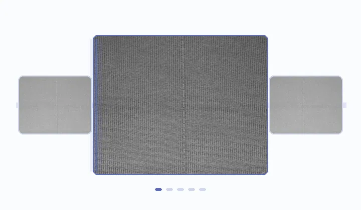
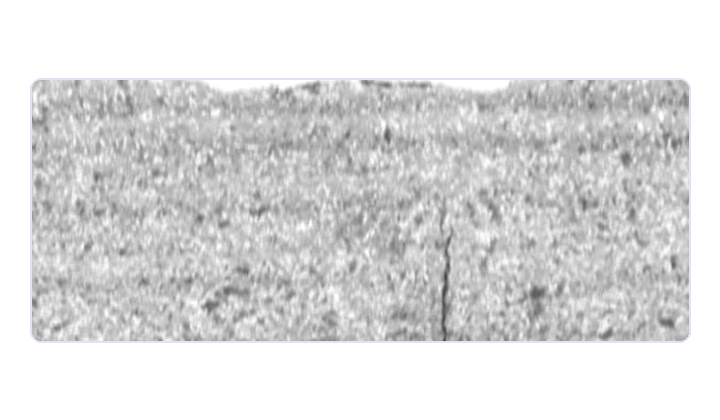
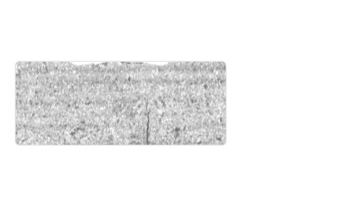
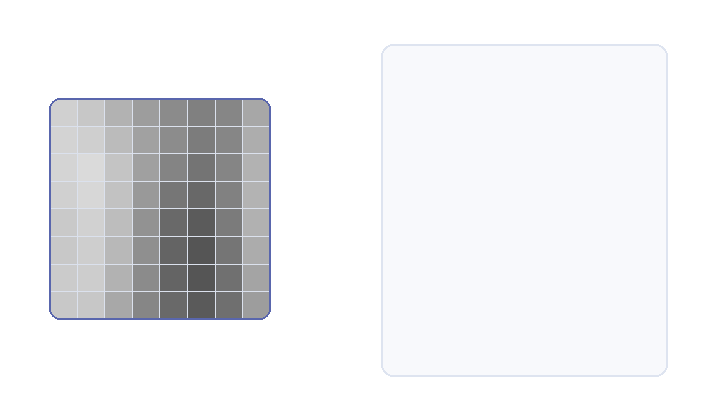
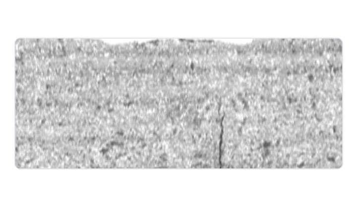
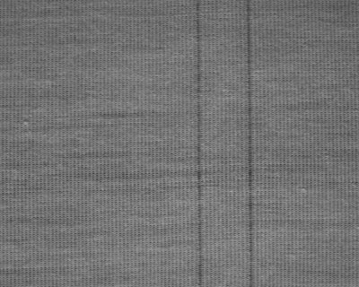
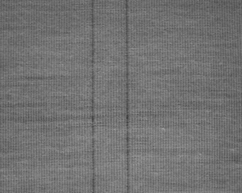
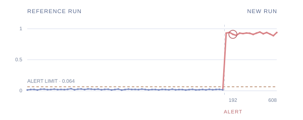

01
Build the reference
Collect normal patches.
TWO INSPECTION APPROACHES
From a single-photo baseline to change-aware inspection of recorded runs.
Explore the project ↓
01 / BASELINE MVP
Labeled photos of cracks in the plastic embedding of electrical commutators.
Collect normal patches.

Align size and brightness.

Inspect the surface area by area.

Capture local texture and edges.
Find the closest normal match.

Highlight regions for review.
HELD-OUT TEST
64 photos · custom item-group split
FIELD FEEDBACK

02 / CHANGE-AWARE EXPERIMENT
93,196 time-ordered knitting-line frames across 22 production scenarios.
FOUNDATION FEATURES
Few labeled defects
Frozen DINOv2-S/14 features describe each patch. Selected startup photos form the reference for localized anomaly maps.
Macro frame AP · handcrafted uses all startup frames; DINOv2 selects its reference. The combined method leads in 2 of 4 runs.
RECORDED EXAMPLES

Macro frame AUROC: 0.884 → 0.965 across the same four defect runs. AP summarizes precision across recall levels; AUROC measures how often a defect frame scores above a normal frame. Neither measures alert workload at a fixed limit.
The different-setting subset has 14 recordings, including 2 with defects. It excludes settings shared with development and is a post-hoc sensitivity check.
Split details ↗VISUAL CHANGE
Process changes may not be shared
Compare global image features across time, independently of the patch anomaly score.
No alert across 16,518 later frames of the same reference recording.



The lower-limit trial caught one more known switch. Its two source windows were isolated, with no confirmed alert on that recording.
Change-signal results ↗Lower-limit trial ↗REVIEW COVERAGE
Review time is limited
Rank frames by anomaly score, then keep selected photos at least 16 frames apart to avoid repeated checks of one event.
of 90 episodes · same score trace and eight checks per run. Random 8 averaged 4.6 (100 draws).
Different-setting subset (2 defect runs): 7 → 12 of 15 episodes · post-hoc
12 and 16 frames also tied on development: 20 / 43 episodes. Same eight checks per run.
Spacing audit ↗REVIEW WORKLOAD
Individual alerts burden staff
Check two high-ranked, time-spaced photos first. A defect or uncertain result opens six more; reviewers can request them too.
All four defect runs opened six more checks. Both rules found 26 / 90 episodes.
Post-hoc exploratory replay · 12 quiet runs received one audit check each. All 24 additional episodes came from one run.
Review-allocation results ↗REFERENCE CHOICE + UPDATE
A new appearance can trigger false alerts
Select less unusual startup photos without labels. This cuts normal alerts but also misses more defect frames; reviewed-photo updates remain on hold.
REFERENCE × REVIEW RULE · 16 RECORDED RUNS
New defect episodes found / 90 · eight checks per run| Reference | Top 8 | Spaced 8 |
|---|---|---|
| All startup | 8 | 19 |
| Selected | 15 | 26 |
DEVELOPMENT EXAMPLE · ONE NORMAL PHOTO
Macro frame AP: 70.3% → 85.4%; selection leads in 1 of 4 defect runs. Each bank has its own source-calibrated alert limit.
Adding reviewed normal patches removed false alerts but also hid defects on later frames.
Same later frames · 20,273 normal · 642 defect